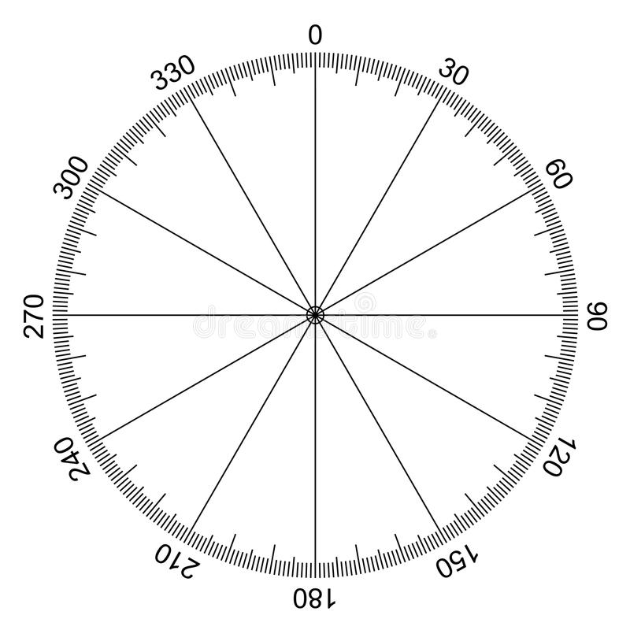

Linear gradient
default gradient top to bottom
This is a top bottom linear gradient. gradient is by default set to top to bottom.
Gradient left to right (to right; key word was written before colorName)
this box is set to left to right gradient.
Diagonal gradient (to bottom right)
this box is set to bottom right gradient
gradient with degree value

Css follow degree according to above scale.
this box is gradient colored with degree value.
multiple color gradient
This box consist of multiple color gradient.
gradient with transparency color
This box is one color fade to deep color gradient.
repeating linear gradient
This box's gradient is repeating
repeating linear gradient with degree
This box's gradient is 45deg skewed
Radial gradient
default radial gradient
This is an simple radial gradient. radial-gradient begin from the center, that means first color will be applied to center and so on.
radial gradient with percentage
This example will use the percentage color
radial gradient with shape
only two value can be added. 1. circle another 2. ellipse(default)
radial gradient with shape circle
This gradient is proper circular shape
radial gradient size parameter
size parameter takes 4 values as follows:
- closest-side
- farthest-side
- closest-corner
- farthest-corner
closest-side
farthest-side
closest-corner
farthest-corner
repeating radial gradient
conic gradient
default conic gradient
default conic gradient starts from 0degree and center position in clockwise direction.
default style
conic gradient with multiple color
5 different colors
conic gradient with degree value
conic gradient with no blend of color
conic gradient pie chart
only border-radius: 50% added
start angle defined
start angle is define to 90degree, that means the gradient will start from 90deg angle.